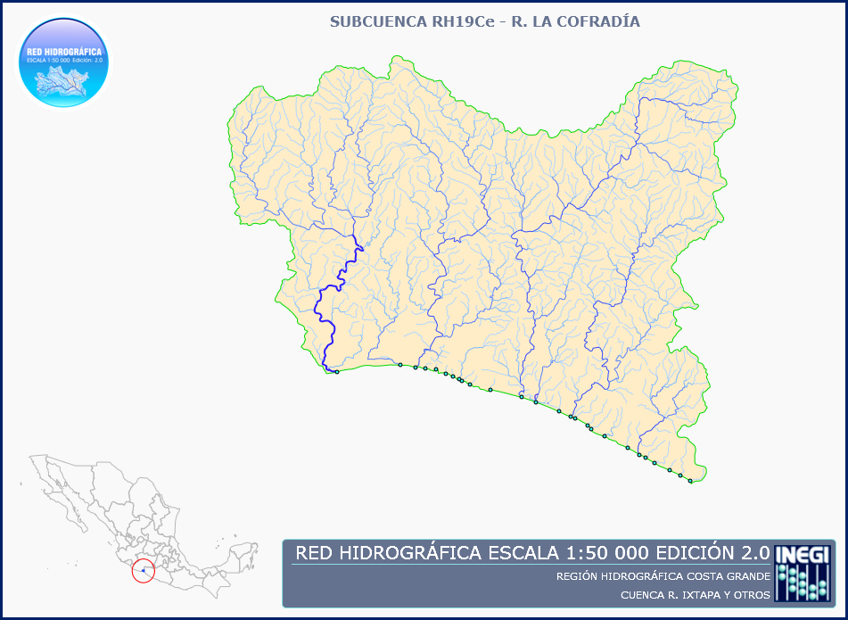

RED HIDROGRÁFICA ESCALA 1:50 000 Edición: 2.0, SUBCUENCA HIDROGRÁFICA RH19Ce R. LA COFRADíA /CUENCA R. IXTAPA Y OTROS /R.H. COSTA GRANDE
Metadata also available as
Metadata:
- Identification_Information:
-
- Citation:
-
- Citation_Information:
-
- Originator: Instituto Nacional de Estadística y Geografía - INEGI.(ed.)
- Publication_Date: 20100630
- Title:
-
RED HIDROGRÁFICA ESCALA 1:50 000 Edición: 2.0, SUBCUENCA HIDROGRÁFICA RH19Ce R. LA COFRADíA /CUENCA R. IXTAPA Y OTROS /R.H. COSTA GRANDE
- Edition: 2.0
- Geospatial_Data_Presentation_Form: Datos vectoriales digitales.
- Publication_Information:
-
- Publication_Place: Aguascalientes, Ags., México.
- Publisher: Instituto Nacional de Estadística y Geografía - INEGI.
- Online_Linkage: <http://www.inegi.org.mx/>
- Description:
-
- Abstract:
-
La Red Hidrográfica escala 1:50 000 en su edición 2, ofrece un sistema de circulación lineal estructurado y
mejorado, que representa el comportamiento de drenaje superficial de una cuenca hidrográfica, en el cual se
garantiza la continuidad de flujos a través de subcuencas, además de incluir indicadores de hidromorfometría como
la magnitud de orden según clasificación de Strahler y el nivel de corriente entre otros, que aunado a la
utilización de métodos y herramientas de redes geométricas en aplicaciones de sistemas de información geográfica,
es de gran utilidad para diversos estudios. Sus componentes vectoriales son: líneas de flujo, puntos de drenaje y
el polígono de la subcuenca también digitalizado a la misma escala de la red, el cual se caracteriza por tener consistencia
espacial con la Red Hidrográfica de acuerdo a los límites físico-naturales sobre la divisoria de cada unidad. Para su
digitalización, se consideró como referencia la conformación de áreas en función del
componente "División de Aguas Superficiales" de la "Carta Hidrológica escala 1:250 000 serie I",no
obstante presenta cambios significativos debido al detalle de la información y de la interpretación de los
escurrimientos superficiales.
- Purpose:
-
Proveer a los especialistas y público en general, de información de redes hidrográficas a mayor detalle en apoyo a los tomadores de decisiones para diversos proyectos relacionados con la administración del recurso hídrico, calidad del agua, prevención de desastres naturales entre otros orientados al desarrollo sustentable del país.
- Supplemental_Information:
-
Las redes fueron elaboradas a partir de los rasgos hidrográficos contenidos en los
conjuntos de datos topográficos escala 1:50 000, en específico corrientes y cuerpos de
agua intermitentes y perennes, para lo cual fue necesario realizar la interpretación, análisis y edición
de la conectividad de las líneas de flujo, así como desarrollar algoritmos para determinar la dirección de flujo para cada segmento e indicadores de hidromorfometría, entre otros para validación geométrica y topológica.
Los conjuntos digitales que pertenecen a esta subcuenca
y su correspondiente fecha de actualización o creación son: e13d19(1998-02-28), e14c11(1998-05-31), e13b89(1998-09-30), e14a81(2000-05-31).
Las fechas anteriormente mencionadas son las mismas detalladas(en el mismo orden) en la sección "Time_Period_Information" de este metadato.
- Time_Period_of_Content:
-
- Time_Period_Information:
-
- Multiple_Dates/Times:
-
- Single_Date/Time:
-
- Calendar_Date: 19980228
- Single_Date/Time:
-
- Calendar_Date: 19980531
- Single_Date/Time:
-
- Calendar_Date: 19980930
- Single_Date/Time:
-
- Calendar_Date: 20000531
- Currentness_Reference: ground condition
- Status:
-
- Progress: Complete
- Maintenance_and_Update_Frequency:
-
Continuo y actualización en función de prioridades del área productora.
- Spatial_Domain:
-
- Bounding_Coordinates:
-
- West_Bounding_Coordinate: -101.84141428828
- East_Bounding_Coordinate: -102.14827074328
- North_Bounding_Coordinate: 18.1744847911203
- South_Bounding_Coordinate: 17.9175045181203
- Keywords:
-
- Theme:
-
- Theme_Keyword_Thesaurus: Ninguno
- Theme_Keyword: Afluente
- Theme_Keyword: Agua
- Theme_Keyword: Cauce
- Theme_Keyword: Corriente de agua
- Theme_Keyword: Cuenca
- Theme_Keyword: Escurrimiento superficial
- Theme_Keyword: Hidrografía
- Theme_Keyword: Hidrología
- Theme_Keyword: Línea de flujo
- Theme_Keyword: Recurso hídrico
- Theme_Keyword: Red geométrica
- Theme_Keyword: Red hidrográfica
- Theme_Keyword: Río
- Theme_Keyword: Sistema de drenaje
- Place:
-
- Place_Keyword_Thesaurus: Ninguno
- Place_Keyword: Cuenca hidrográfica
- Access_Constraints:
-
Acceso al público a través de los centros de venta del Instituto Nacional de Estadística y Geografía - INEGI.
- Use_Constraints:
-
Como insumo para otras aplicaciones o publicaciones sin la autorización
respectiva u omisión de los créditos del autor.
- Browse_Graphic:
-
- Browse_Graphic_File_Name: RH19Ce.jpg

- Browse_Graphic_File_Description:
-
Imagen que incluye el polígono de subcuenca, de la Unidades de Captación de Aguas Superficiales escala 1:50 000 Edición 1.0 y la Red Hidrográfica escala 1:50 000 Edición 2.0.
- Browse_Graphic_File_Type: JPEG
- Data_Quality_Information:
-
- Logical_Consistency_Report:
-
La red hidrográfica fue elaborada a partir de los datos topográficos escala 1:50 000 y por tanto las especificaciones técnicas se sustentan en gran parte en el diccionario de datos topográficos de la misma escala, además de especificaciones propias de la red que se mencionan en el documento técnico descriptivo. Una de las características de la red hidrográfica es la integridad de la conectividad entre rasgos y la segmentación en cada confluencia. Además se cuenta con un rasgo puntual denominado "Punto de drenaje" el cual se utiliza para indicar el lugar donde se drenan las aguas a otra subcuenca o al mar, o para indicar la acumulación de flujos como en lagos o lagunas, así como para aquellas corrientes de agua que desaparecen de la superficie debido a infiltración o evapotranspiración. Este rasgo puntual mantiene una relación lógica y espacial con las líneas de flujo.
- Completeness_Report:
-
Para la construcción de un sistema de drenaje lineal, fue necesario generar líneas centrales a los cuerpos de agua, además de considerar en algunos casos, la inclusión de canales sobre todo aquellos importantes que dan continuidad a los flujos de cauces naturales. Así mismo, es importante mencionar que una de las validaciones de la red, fue la de verificar su integridad con medios y métodos de redes geométricas.
- Lineage:
-
- Process_Step:
-
- Process_Description:
-
1.- Investigación y análisis del proyecto: de acuerdo a la magnitud del proyecto, se estableció dividirlo en diferentes etapas, siendo la prioritaria el determinar el sistema lineal para lo cual fue necesario realizar la conectividad de las líneas de flujo
.
2.- Desarrollo conceptual y metodológico: se elaboró la documentación metodológica fundamental para el sustento del proyecto y la capacitación del personal involucrado
.
3.- Análisis, diseño y desarrollo de herramientas geomáticas para edición: a efecto de obtener resultados a corto plazo y en una forma controlada, se automatizaron diversos procesos además de generar medios cliente-servidor para transferencias de insumos, entre otras herramientas para la edición controlada e informes automáticos de avance y productividad, así como registrar observaciones tanto de los analistas como de los supervisores
.
4.- Análisis, diseño y desarrollo del sistema de control y seguimiento de actividades: de forma paralela se diseñó una base de datos para registrar asignaciones de carga de trabajo, así como indicadores de productividad y calidad, además de diseñar y desarrollar una página web para reportar en tiempo real los avances
.
5.- Integración y organización de los insumos: consistente en bajar los datos topográficos de la base de datos y organizarlos de forma automatizada en un servidor
.
6.- Procesamiento de insumos: consistente en aplicar un recorte de los datos topográficos a un área irregular que es la unidad más desagregada de la División Hidrológica de Aguas Superficiales escala 1:250 000 serie I, que es la subcuenca, con un buffer excedente de 3 Km, además de aplicar un proceso de limpieza topológica
.
7.- Asignación de cargas de trabajo: de acuerdo a disponibilidad de los datos topográficos se hizo la asignación a los analistas-editores de forma progresiva
.
8.- Análisis y edición de la conectividad: actividad de interpretación del comportamiento hidrológico en función de diversos insumos como altimetría, imágenes satelitales, ortofotos, permeabilidad de suelos y rocas, corrientes y cuerpos de agua, canales, entre otros insumos, además con la ayuda de diversas herramientas desarrolladas, generar líneas centrales de cuerpos de agua, aplicar un diagnóstico de conectividad para detectar las desconexiones y de forma simultánea determinar las direcciones de flujo, conectar los rasgos, entre otros
.
9.- Supervisión de los trabajos de edición: actividad consistente en revisar cada una de las líneas nuevas generadas para la conexión de rasgos y retroalimentar al analista-editor sobre criterios considerados, además de revisar la integridad de la red, direcciones de flujo, entre otros aspectos
.
10.- Atención de observaciones del supervisor: el analista-editor lee y atiende las observaciones del supervisor
.
11.- Revisión y liberación de redes por parte del supervisor: por segunda ocasión el supervisor revisa que el analista-editor hubiese atendido sus observaciones y libera la red hidrográfica del trabajo de edición
.
12.- Control y seguimiento de los avances: de forma permanente a lo largo del proyecto, se monitorearon los avances, e indicadores de productividad y de calidad, se dio acceso al sistema a todos los directores y subdirectores en oficinas centrales, regionales y estatales involucrados en el proyecto para que monitorearan sus avances, además de informar quincenalmente vía correo electrónico con información más detallada
.
13.- Carga de redes en una base de datos espacial: una vez liberadas las redes, se procedió a subirlas a una base de datos en la cual se aplicaron otras validaciones y se les generó un identificador único a cada línea de flujo
.
14.- Generación de archivos entregables y de metadatos para su entrega al área de Base de Datos
- Process_Date: 20091215
- Spatial_Data_Organization_Information:
-
- Direct_Spatial_Reference_Method: Vector
- Spatial_Reference_Information:
-
- Horizontal_Coordinate_System_Definition:
-
- Geodetic_Model:
-
- Horizontal_Datum_Name:
-
International Terrestrial Reference Frame of 1992, época 1988.0, en el GRS80
- Ellipsoid_Name: Geodetic Reference System 80
- Semi-major_Axis: 6378137.0
- Denominator_of_Flattening_Ratio: 298.2572221
- Distribution_Information:
-
- Distributor:
-
- Contact_Information:
-
- Contact_Organization_Primary:
-
- Contact_Organization: Instituto Nacional de Estadística y Geografía - INEGI.
- Contact_Person: Ing. Isidoro Jorge Luis Sosa.
- Contact_Position: Responsable del Centro de Ventas.
- Contact_Address:
-
- Address_Type: mailing and physical address
- Address:
-
Avenida Héroe de Nacozari #2301 Sur. Fraccionamiento Jardines del Parque.
- City: Aguascalientes.
- State_or_Province: Ags.
- Postal_Code: 20276.
- Country: México.
- Contact_Voice_Telephone:
-
(52) (449) 918 19 48 y 910 53 00. Extensiones 5031, 5111 y 5208. Lada 01 800 463 44 01.
- Contact_Facsimile_Telephone: (52) (449) 918 22 32.
- Contact_Electronic_Mail_Address: ventassede@inegi.org.mx
- Hours_of_Service: De 8:30 a 21:00.
- Contact_Instructions:
-
Favor de referirse a la información que está contenida en
esta misma sección de los metadatos.
Nota - si requiere factura sólo se podrá expedir de las ocho
treinta hasta la dieciseis treinta horas.
- Resource_Description:
-
RED HIDROGRÁFICA ESCALA 1:50 000 Edición: 2.0, SUBCUENCA HIDROGRÁFICA RH19Ce R. LA COFRADíA /CUENCA R. IXTAPA Y OTROS /R.H. COSTA GRANDE
- Distribution_Liability:
-
El Instituto Nacional de Estadística y Geografía
- INEGI no se hace responsable por el uso que
usted le de a los datos.
- Metadata_Reference_Information:
-
- Metadata_Date: 20100315
- Metadata_Review_Date: 20100615
- Metadata_Contact:
-
- Contact_Information:
-
- Contact_Organization_Primary:
-
- Contact_Organization: Instituto Nacional de Estadística y Geografía - INEGI.
- Contact_Person: Administrador de Metadatos.
- Contact_Position: Administración de Metadatos.
- Contact_Address:
-
- Address_Type: mailing and physical address
- Address:
-
Avenida Héroe de Nacozari #2301 Sur. Fraccionamiento Jardines del Parque.
- City: Aguascalientes.
- State_or_Province: Aguascalientes.
- Postal_Code: 20276
- Country: Mexico
- Contact_Voice_Telephone: (52) (449) 910 53 00. Extensiones 5631, 1750 y 5147.
- Contact_Facsimile_Telephone: (52) (449) 442 41 45
- Contact_Electronic_Mail_Address: rafael.arrioja@inegi.org.mx
- Hours_of_Service: De 8:30 a 16:30
- Contact_Instructions:
-
Favor de referirse a la información que está contenida en esta misma sección de los metadatos.
- Metadata_Standard_Name: FGDC Content Standards for Digital Geospatial Metadata
- Metadata_Standard_Version: FGDC-STD-001-1998
Generated by mp version 2.8.0 on Mon Sep 20 10:40:31 2010